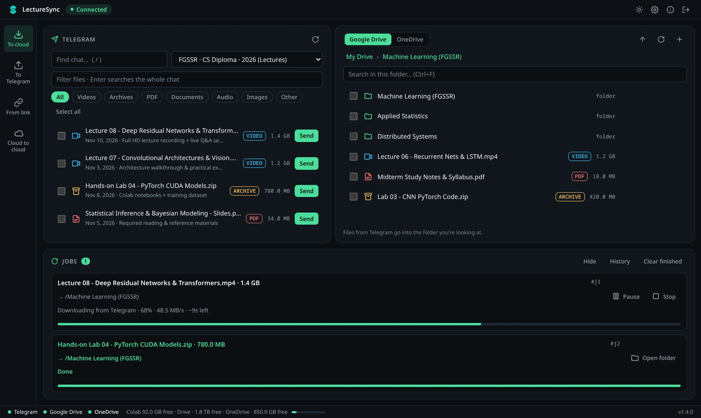
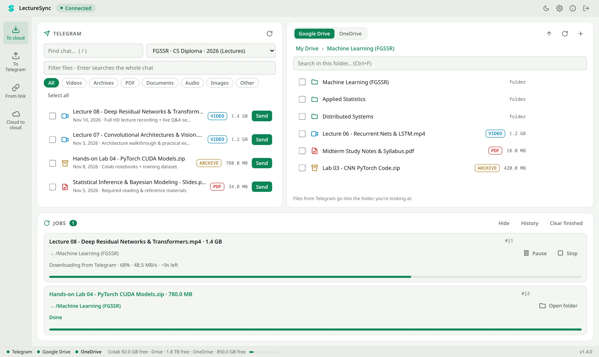
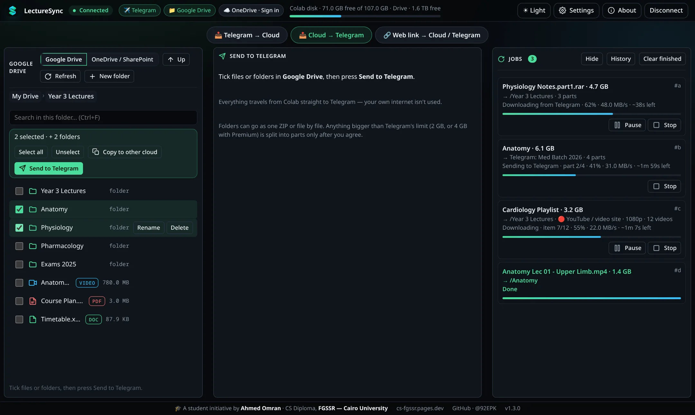
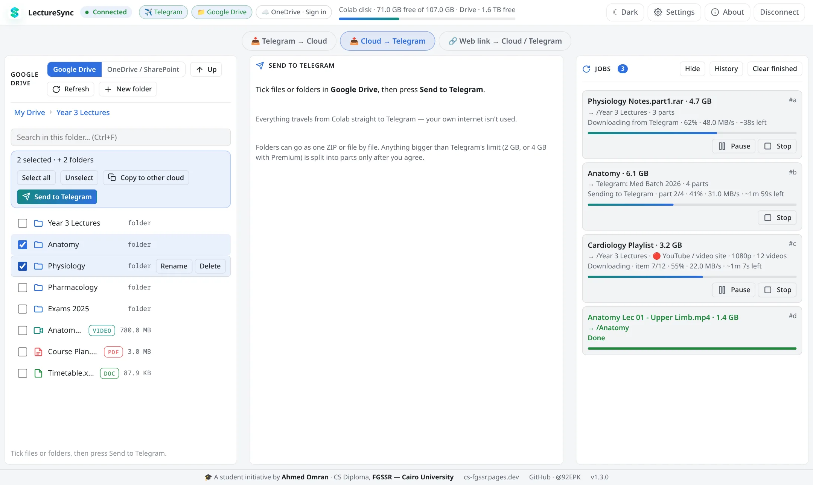
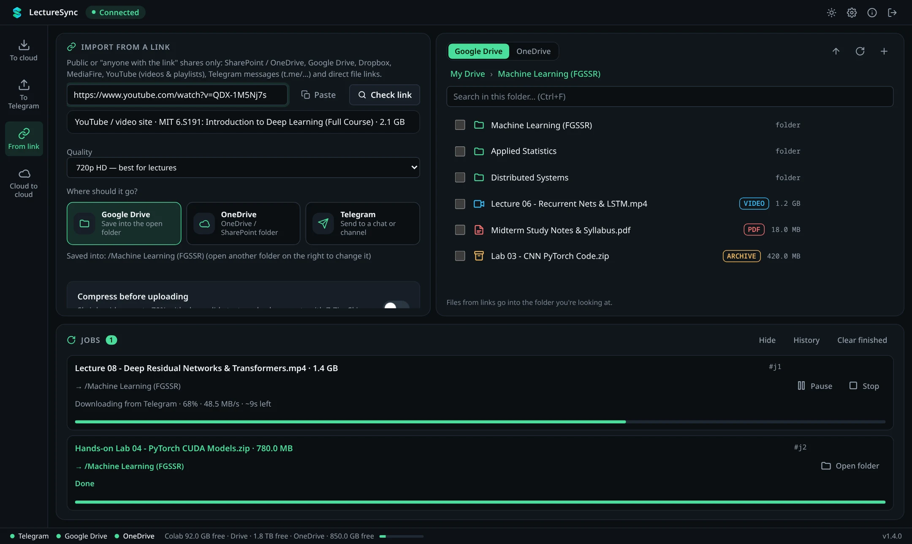
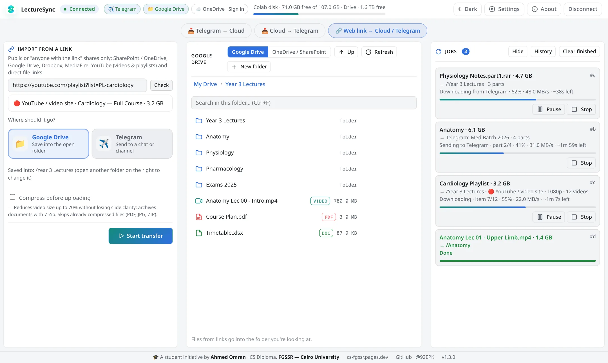

Three modes, one workspace
Telegram → Cloud, Cloud → Telegram and Web link → Cloud / Telegram, side by side with a live Jobs panel: speed, ETA, pause and stop.
TelegramGoogle DriveOneDrive / SharePointYouTubeDropboxMediaFiret.me links
LectureSync is a desktop app that moves multi-gigabyte lectures between Telegram, Google Drive, OneDrive and web links — executed entirely inside your own Google Colab. Your connection only sends a few kilobytes of commands.






Pick a chat, tick split RAR parts and press Send. Colab downloads, extracts and saves them into Google Drive or OneDrive.
Tick folders in your cloud and send them to any chat or channel — as one ZIP or file by file, split past Telegram’s 2 GB limit only if you agree.
Paste a YouTube, OneDrive, Drive, Dropbox, MediaFire or t.me/… link. Optionally shrink videos and bundle playlists into one 7-Zip.
How it works
LectureSync splits the work in two. The app on your laptop only decides; your Colab session does all the heavy lifting on Google’s network.
Browse chats and folders, pick files, watch progress. Sends tiny JSON commands.
~ 4 KB per job
Downloads, extracts, compresses and uploads at datacenter speed. Disappears when you close it.
tens of MB/s
Files travel cloud-to-cloud and never pass through your home connection.
0 bytes on your line
Features
Telegram → Cloud, Cloud → Telegram and Web link → Cloud / Telegram, side by side with a live Jobs panel: speed, ETA, pause and stop.
8 concurrent MTProto streams with tgcrypto — from ~1.3 MB/s to tens of MB/s.
Tick every .partN.rar; they’re joined and extracted into the folder you’re viewing.
Videos shrink up to 70% at 480p, 720p or 1080p with slides still sharp. Documents go into 7-Zip.
Search any chat, or type an @username or t.me link. Validated before the job starts.
Your Telegram keys are encrypted on your device. Files live in your own Google account. There is no LectureSync server — the developer never sees anything.
Download
Each release is built automatically by GitHub Actions from the public source code.
10 / 11 · x64
SmartScreen? More info → Run anyway
11+ · Apple Silicon & Intel
“Damaged”? xattr -cr /Applications/LectureSync.app
x86-64 · AppImage / .deb
sudo apt install ./LectureSync_*.deb
—
Get started
Create an API ID and Hash at my.telegram.org. Stored encrypted on your device, once.
The app opens the Colab notebook. Press Run, allow Drive, click Connect.
Scan the QR code to sign in, choose files or paste a link, pick a destination, start.
FAQ
No. Everything runs on your own Google account and Telegram keys. There is no LectureSync server.
The app isn’t code-signed yet. The warning appears for any unsigned app; you can verify every file with its SHA-256 checksum.
No. It runs on Colab’s free tier and is MIT-licensed open source.
Colab machines are temporary, and Google requires a fresh consent click every time a new one connects to your Drive. It’s a one-click step.
Yes — any chat you can access, any Drive or OneDrive folder, any public link.
Student initiative · FGSSR, Cairo University
Designed and built by Ahmed Omran, CS Diploma — so nobody has to burn their home internet on lecture files again.